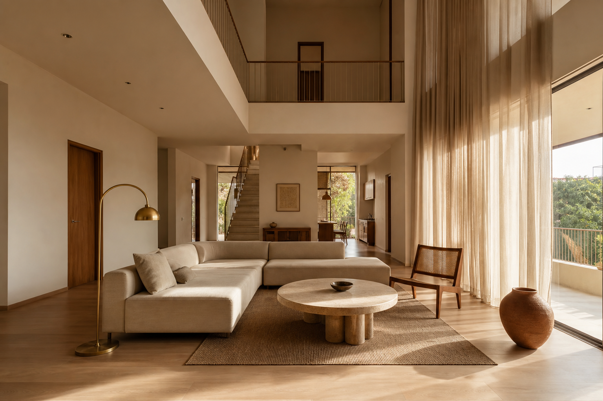
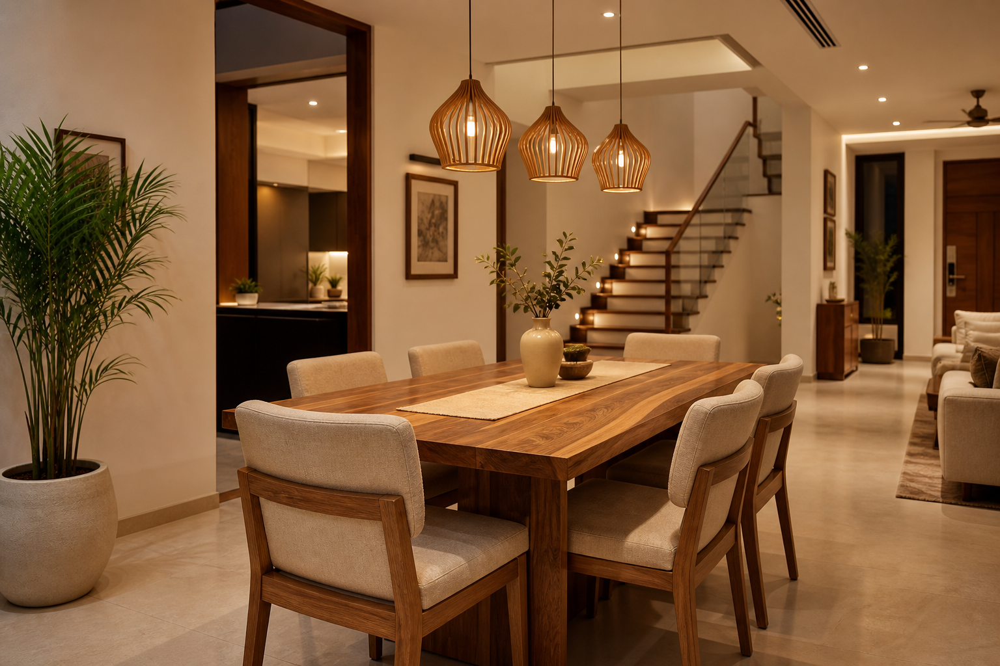
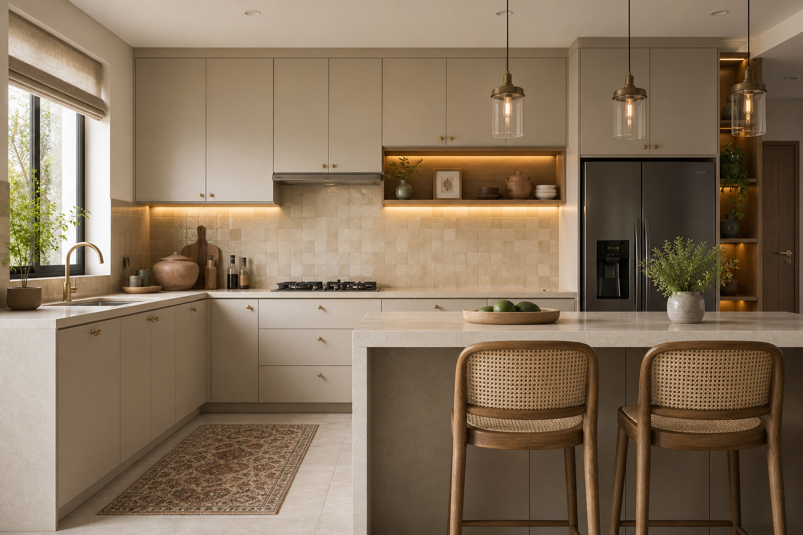
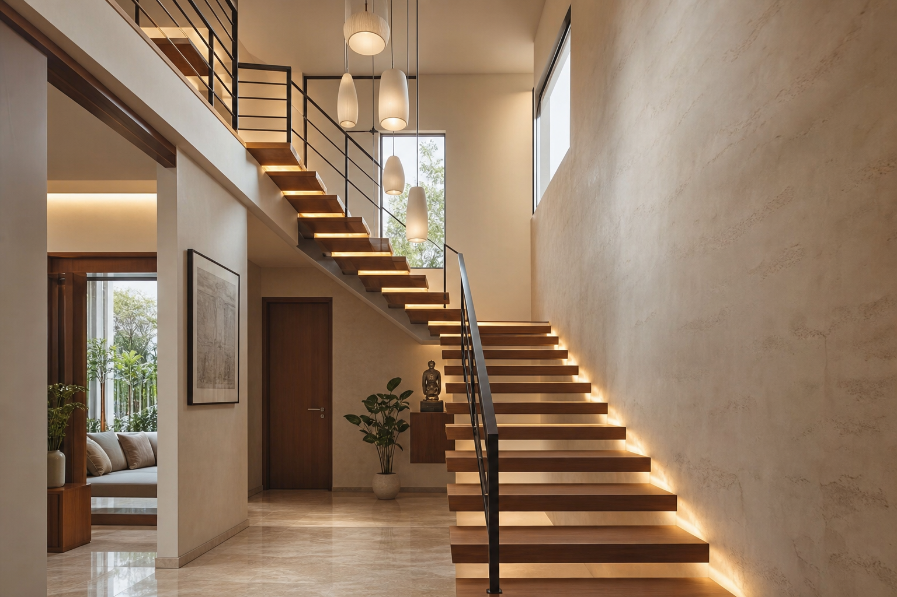
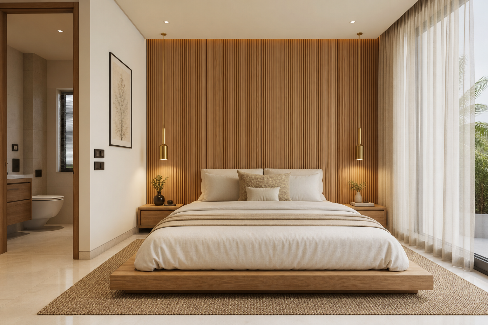
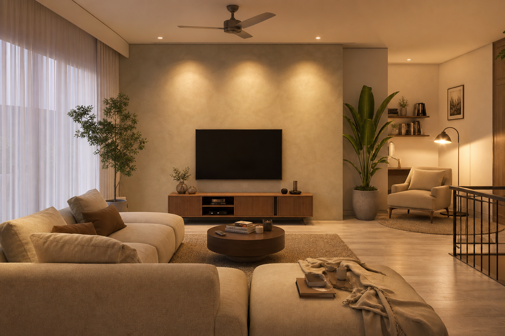
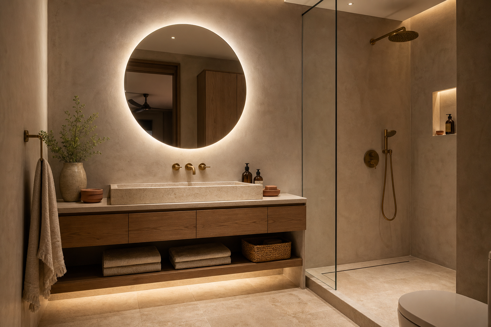
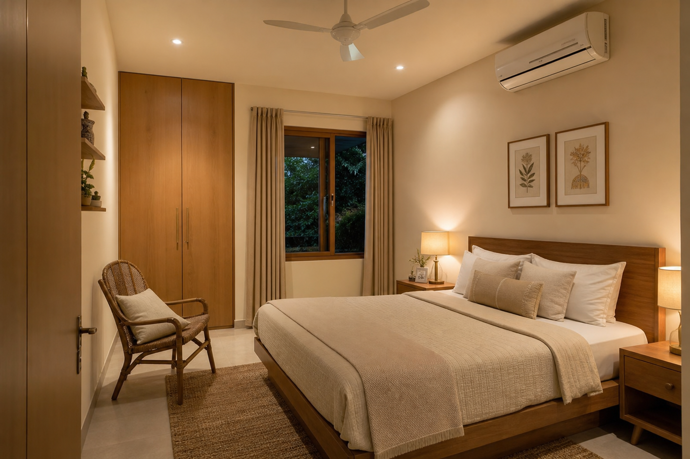
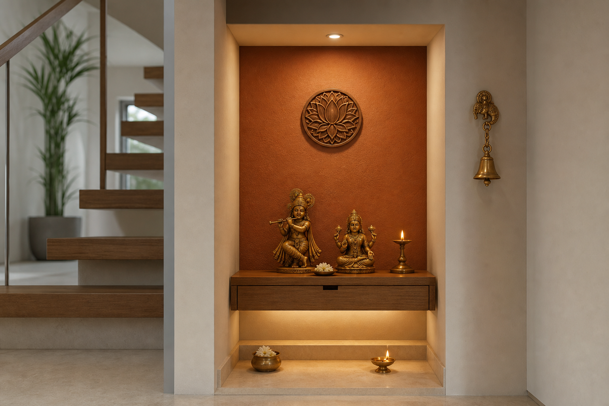

Primary detailing follows Concept 02 — Oat & Oak — with selective terracotta accents from Concept 01 where hospitality matters.

Low oat linen sofa, travertine coffee table, fluted oak media console, sheer floor-to-ceiling curtains. One terracotta vessel as the accent moment.

Solid oak table for six, linen chairs, single sculptural pendant cluster. Visual link to kitchen via shared brass and stone tones.

Matte oat laminate carcasses, beige quartz counters, warm zellige / stone splash, brushed brass handles, under-cabinet linear LEDs.

Floating oak treads, slim metal balustrade, soft wall texture, step LEDs. The duplex’s most important “architecture photo.”

Low oak platform bed oriented South→North exactly. Fluted oak headboard wall, cream linen bedding, suspended bedside pendants.

Softer, cozier sibling of the formal living room. Boucle modular sofa, limewash TV wall, reading chair, evening scenes for daily life.

Microcement or large matte tiles, oak vanity, brass taps, backlit mirror. Spa calm without marble extravagance.

Quieter version of the master language. Same orientation rule. Hospitality-ready without competing with the upstairs suite.

Quiet contemporary sanctum. Soft niche lighting, oak shelf, brass diya, terracotta-backed niche used sparingly so sacred warmth never becomes decoration overload.